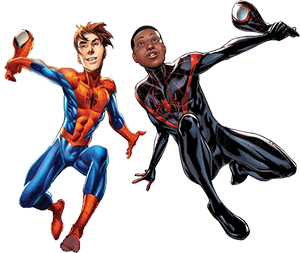

L'arrivée des variables CSS a été une grande avancée permettant d'éviter des répétitions inutiles, de faciliter la lisibilité du code et d'ajouter une couche de flexibilité au CSS.
Voici un exemple de répétitions (red)
.spider-man .head { background-color: red; }
.spider-man .eye { background-color: white; }
.spider-man .body { background-color: red; }
.spider-man .leg { background-color: red; }
Ce code fonctionne. Cependant, si pour X raisons il est décidé de passer de la version Spider-man Peter Parker vers celle Miles Morales, il faudra modifier chacune des valeurs red pour les mettre à blue. Ce qui requiert du temps et représentera un risque d'erreurs.

Définition
Pour définir une variable globale à la racine du document (ou en anglais root), il suffit d'écrire:
:root {
--nom-de-la-variable: valeur;
}
Puisque les variables sont héritées, tous les éléments de la page y ont accès, puisqu'ils sont tous enfants de la racine du document.
Remarquez-le : avant le mot-clé root, ainsi que les -- avant le nom de la variable.
Pour accéder à une variable, on écrit:
var(--nom-de-la-variable)
Pour reprendre l'exemple de Spider-man, il serait possible d'écrire:
:root { --costume: red; }
.spider-man .head { background-color: var(--costume); }
.spider-man .eye { background-color: white; }
.spider-man .body { background-color: var(--costume); }
.spider-man .leg { background-color: var(--costume); }
Ainsi, simplement en changeant la valeur de la variable --costume de :root { --costume: red; } à :root { --costume: blue; } il serait possible de changer la couleur de Spider-man en entier rapidement et sans risque d'erreur.
Notez qu'il est possible de définir plusieurs variables CSS dans le même élément :root { ... }.
Par exemple:
:root {
--costume: red;
--yeux: white;
}
En fait, un seul :root{ ... } est normalement défini.
Contexte (scope)
Dans l'exemple précédent, notre variable CSS était définie au root du document. Cependant, il est possible de définir une variable à l'intérieur d'un sélecteur CSS, de sorte que cette variable ne soit disponible uniquement qu'à l'intérieur du sélecteur et de ses enfants.
Par exemple:
.spider-man { --costume: red; }
.spider-man .head { background-color: var(--costume); }
.spider-man .eye { background-color: white; }
.spider-man .body { background-color: var(--costume); }
.spider-man .leg { background-color: var(--costume); }
Ainsi, la variable --costume n'existe que dans le contexte du sélecteur .spider-man. Si elle était utilisée dans un autre sélecteur, par exemple: .green-goblin, elle ne retournerait aucune valeur et donc serait ignorée par le navigateur.
Écraser une variable
En donnant un contexte plus spécifique, il est possible d'écraser la valeur d'une variable.
Par exemple:
:root { --costume: red; }
.spider-man .head { background-color: var(--costume); }
.spider-man .eye { background-color: white; }
.spider-man .body { background-color: var(--costume); }
.spider-man .leg { background-color: var(--costume); }
.green-goblin { --costume: green; }
.green-goblin .head { background-color: var(--costume); }
.green-goblin .eye { background-color: white; }
.green-goblin .body { background-color: var(--costume); }
.green-goblin .leg { background-color: var(--costume); }
Dans cet exemple, la variable --costume à la valeur red dans le contexte globale des styles. Ainsi, si un personnage n'écrase pas cette variable, son costume sera automatiquement rouge. Tandis que le sélecteur .green-goblin redéfinit la valeur de cette variable dans son propre contexte à green.
Même si un personnage est défini après .green-goblin, s’il utilise la variable --costume, celle-ci retournera red, car la valeur green n’est retournée qu’à l’intérieur du contexte du sélecteur .green-goblin.
var()
var()
Résumé vidéo
EXERCICE
Variables - Journée Internationale des Droits des Femmes
Pour cet exercice, vous devrez incorporer des variables CSS dans un projet sur la Journée Internationale des Droits des Femmes.
EXERCICE
Variables - Canadiens
Pour cet exercice, vous devrez incorporer des variables CSS dans un projet reproduisant en CSS le logo du club de hockey des Canadiens de Montréal.
EXERCICE
Variables - Lakers
Pour cet exercice, vous devrez incorporer des variables CSS dans un projet tentant de reproduire de façon minimaliste en CSS l’uniforme des Lakers de Los Angeles, la célèbre équipe de basketball 🏀.